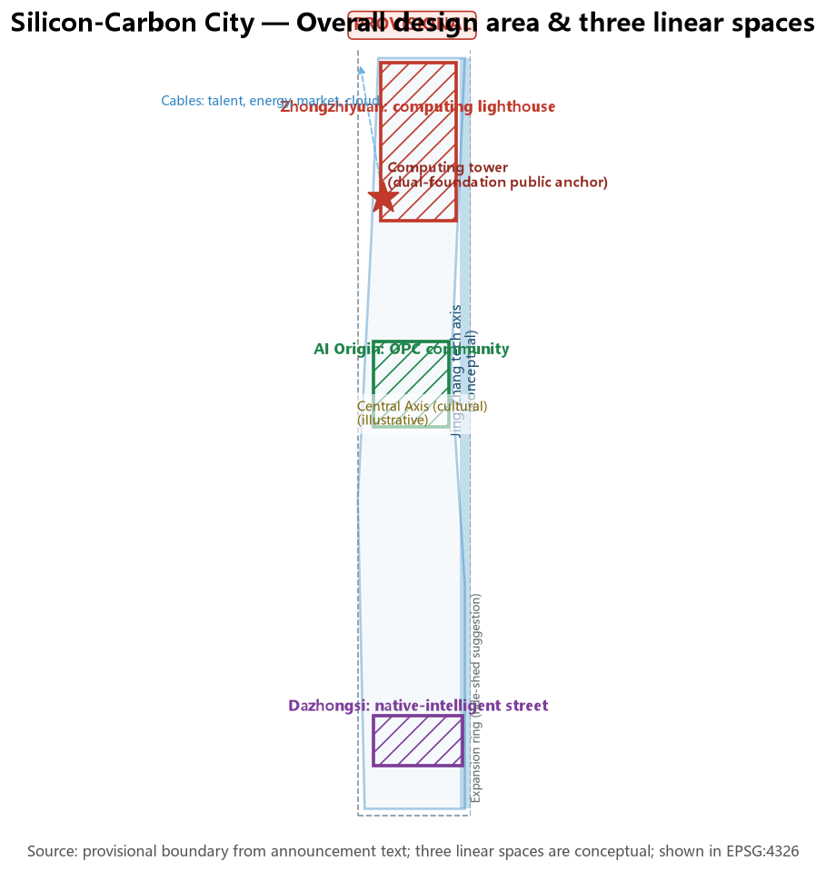
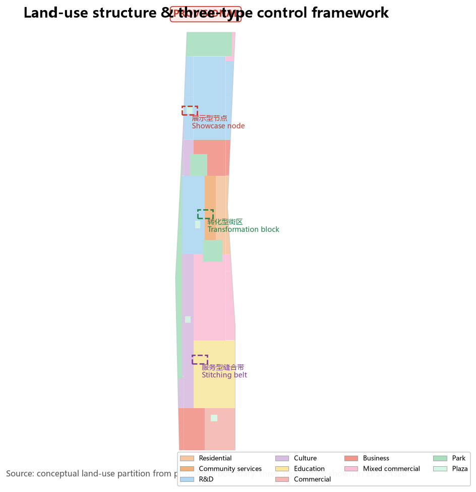
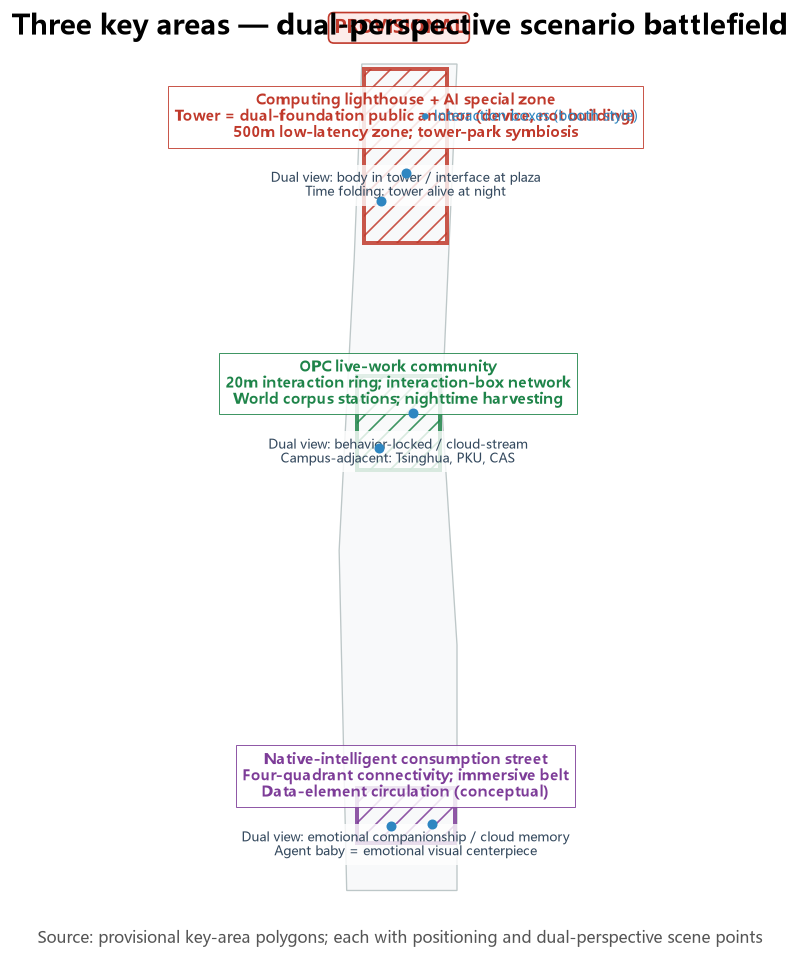
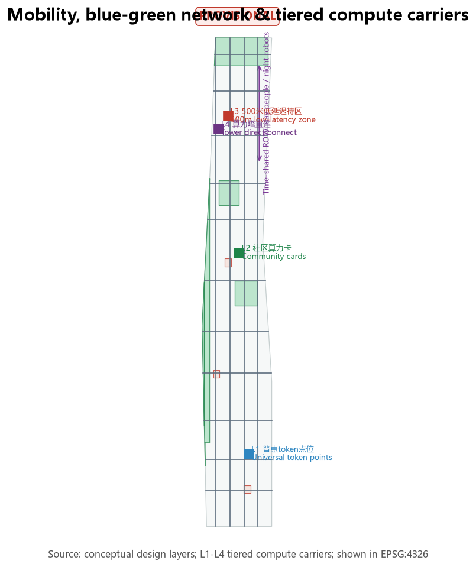
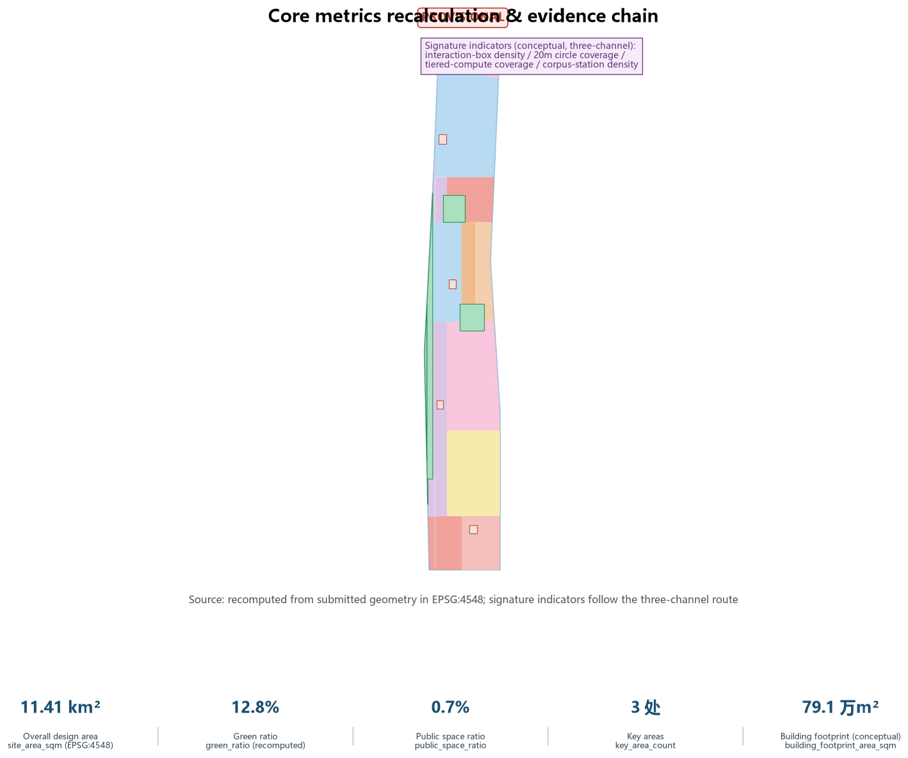

01 总览地图 · Overview map

Core metrics (recomputed from geometry in EPSG:4548)
11.41 km²Overall design area (provisional)
12.8%Green ratio
0.7%Public-space ratio
3Key areas (provisional)
79.1 haBuilding footprint (conceptual/device)
51.8 kmRoad centerlines (conceptual)
Three-level scope
| Level | Scope | This proposal answers |
|---|---|---|
| Coordinated research area | 43.6 km² (announced) | Compute as general equivalent; cable/umbilical maps; three linear spaces (conceptual) |
| Overall design area | 11.4 km² (provisional) | Expansion ring + compute-flow/human-flow dual maps + three-type control framework |
| Key detailed-design area | 368.4 ha (provisional) | Dual-perspective scenario method; tower public anchor; OPC community; native-intelligent street |
02 用地分区与三型分区 · Land-use zoning & three-type zones

03 重点区域双视角设计 · Key areas (dual perspective)

04 交通慢行与蓝绿公共空间 · Mobility, blue-green & public space

05 核心指标证据 · Metrics evidence

06 概念效果图 · Conceptual renderings

Zhongzhiyuan: computing lighthouse (conceptual)

AI Origin: OPC community (conceptual)

Dazhongsi: native-intelligent street (conceptual)

Embodied-intelligence training (conceptual)

World corpus station (conceptual)

Night: all-night consumption (conceptual)

Night: compute-flow public art (conceptual)
07 更新项目与分期 · Renewal projects & phasing
| Project | Phase | Note |
|---|---|---|
| Computing tower (public anchor) | 2 | Device accounting, tower-park symbiosis |
| Interaction boxes + corpus stations | 1 | Light assets, quick deployment |
| OPC live-work community | 2 | Origin community organic renewal |
| Dazhongsi four-quadrant connectivity | 1 | Entrance first interface |
| Global AI event-week route | 1 onward | Operation and brand |
08 任务覆盖 · Task coverage
| Task | Chapters | Key evidence | Status |
|---|---|---|---|
| Announcement 1.3/1.4/1.5 (17) | Ch.1-13 | compliance_matrix.json | Full |
| agent.1 naming & concept | Ch.2/5 | Silicon-Carbon City (0 collisions) | Done |
| agent.2 full-stack system | Ch.3 | 5-8 cases + five elements + Brookings | Done |
| agent.3 AI+ scenarios | Ch.6 | 12 cards + 6 personas + 3 tests | Done |
| agent.4 public space & landmarks | Ch.5/9 | Tower anchor + pilgrim line + boxes | Done |
| agent.5 cultural narrative | Ch.9 | Jing-Zhang/Zhongguancun/AI culture | Done |
| agent.6 operations & events | Ch.10 | Global AI week + developer community | Done |
09 AI 场景卡 · Scenario cards
| Required scenario cards (10) | Location | Dual-perspective point | Time slot |
|---|---|---|---|
| Token-subsidized café | Public spaces | Preference memory / cloud matching | Day + night unmanned |
| Community compute card | Origin community | Bulk submit / idle aggregation | All day |
| Interaction booth | Communities/streets | Memory/experience / cloud-stream | Mostly day |
| World corpus station | Campus edge/parks | Voluntary / data production | Day collect + night process |
| Agent baby | Dazhongsi street | Companionship / cloud growth | Day + night |
| 20 m start-up field | Origin community | Serendipity / collaboration | Day |
| Tower low-latency experience | 500 m zone | Instant feedback / body in tower | Day + night flow art |
| AI+Healthcare (elderly) | Community nodes | Health record / cross-hospital | 24/7 |
| AI+Education | Campus edge | Learning path / knowledge graph | Day + night study |
| AI+Life services (silver age) | Community/agency | Errand needs / process agent | 24/7 |
| Standby: call-anywhere screens; BCI/AR experience pods (long term) | |||
Signature indicators (conceptual · three-channel)
| Indicator | Conceptual target | Channel |
|---|---|---|
| Interaction-box density | 30 /km² (key areas) | Prose + figures + assumptions |
| 20 m circle coverage | 15% of origin built area | Prose + figures + assumptions |
| Tiered-compute coverage | 40% residents reach L1/L2 | Prose + figures + assumptions |
| Corpus-station density | 5 /km² (campus band) | Prose + figures + assumptions |